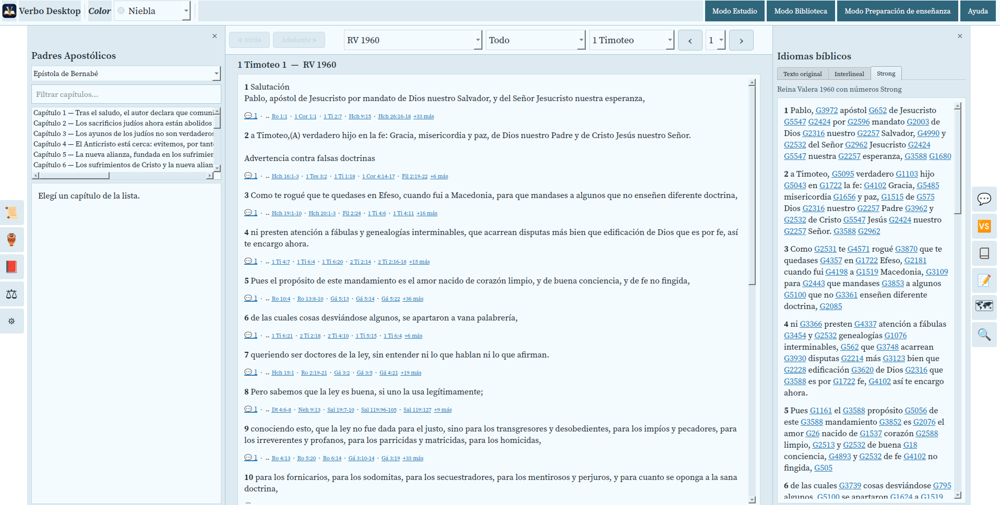
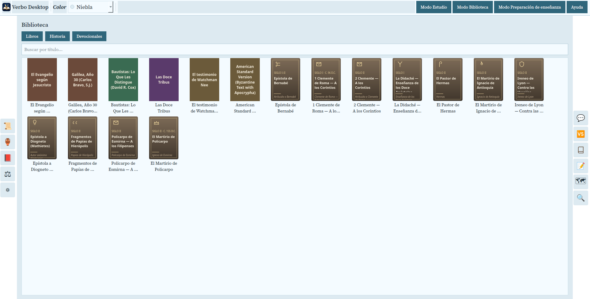
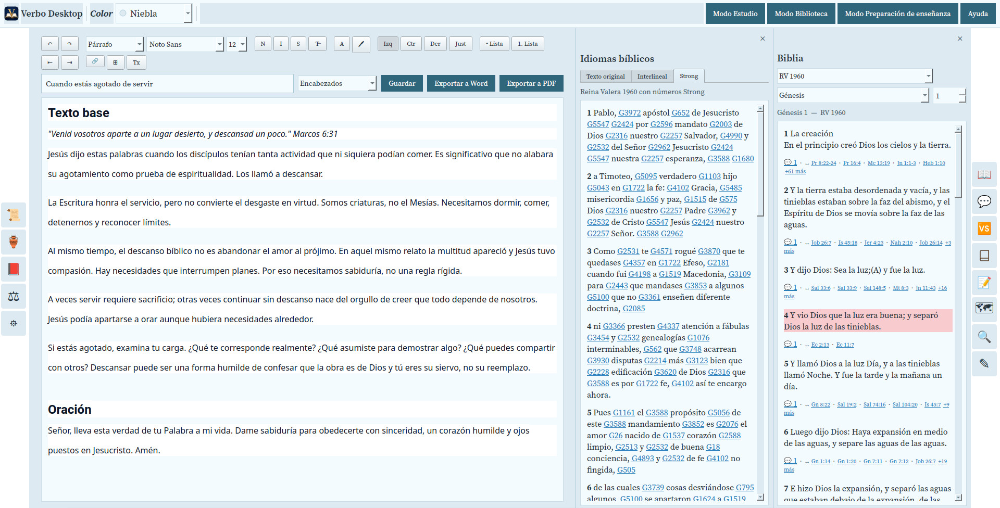
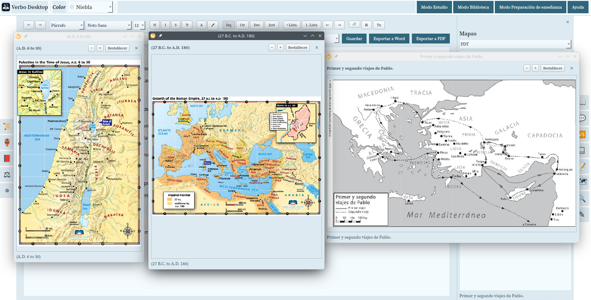
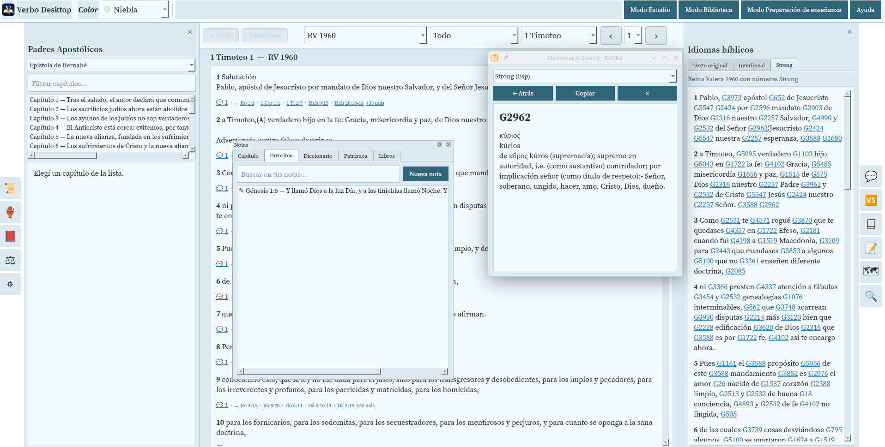
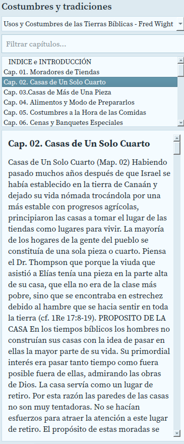
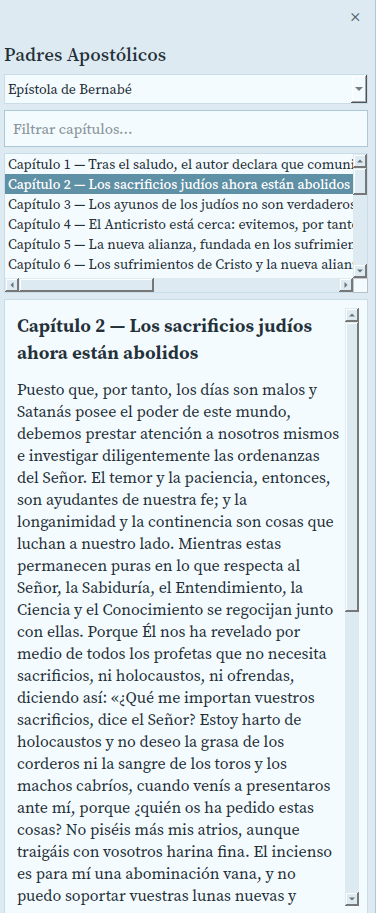
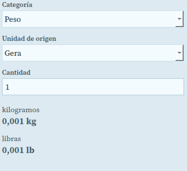

VERBO DESKTOP
Tus módulos ya no pertenecen a un sistema operativo.
Verbo reúne módulos compatibles de e-Sword, MySword y Verbo en una sola aplicación de escritorio para Linux, macOS y Windows.
Linux
macOS Próximamente
Windows Próximamente
Linux primero. También disponible para macOS y Windows.

e-Sword
MySword
Verbo
🐧LINUX NATIVO
Linux ya tenía software bíblico. Ahora puede tener la biblioteca.
Importa módulos compatibles procedentes de ecosistemas de Windows y Android y utilízalos directamente en Verbo, sin tener que ejecutar la aplicación dentro de Windows.
●Verbo Desktop◌ ◌ ◌
Lo que antes vivía separado puede reunirse en Verbo.
El texto vive en la web; la imagen solo explica el flujo. Así la página puede cambiar de idioma sin duplicar gráficos.
e-SwordWindows
MySwordAndroid
VerboModules
Verbo Desktop
🐧Linux
●macOS
Windows
TRES PLATAFORMAS
Una experiencia de escritorio real.
🐧Linux

La prioridad del lanzamiento: una biblioteca bíblica amplia en un entorno Linux nativo.
●macOSPróximamente

Importa tus recursos y trabaja en Verbo directamente desde tu Mac.
WindowsPróximamente
Una nueva alternativa para reunir recursos, estudio y preparación en un solo entorno.
Estudia. Prepara. Lee.
Verbo no es solo un importador. La aplicación cambia de espacio según lo que necesitas hacer.
01
Modo Estudio
Biblia, referencias cruzadas, idiomas bíblicos, Strong y recursos alrededor del texto.
02
Preparación de enseñanza
Editor, Biblia y herramientas de estudio trabajando juntos para bosquejos, clases y predicaciones.
03
Modo Biblioteca
Lee y organiza libros, historia, devocionales y otros recursos en una biblioteca visual.
Mucho más que abrir una Biblia.
Recursos visuales, lingüísticos, históricos y personales permanecen cerca del texto.



TU BIBLIOTECA PERSONAL
De los Padres Apostólicos a tus próximos recursos.
Verbo también es un espacio de lectura. Libros, historia, devocionales, Padres Apostólicos y otros recursos pueden convivir con tu estudio bíblico.
- Padres Apostólicos
- Historia y contexto
- Devocionales y libros
- Recursos importados por el usuario


VERBO DESKTOP
Tu biblioteca. Tu sistema. Tu espacio de estudio.
Paquetes de Linux disponibles (.deb y .rpm, versión de desarrollo). macOS y Windows llegarán próximamente.